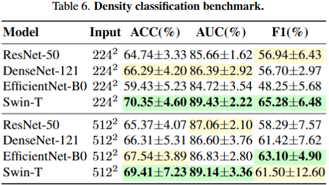

LUMINA: A Multi-Vendor Mammography Benchmark with Energy Harmonization Protocol
Hongyi Pan, Gorkem Durak, Halil Ertugrul Aktas, Andrea M. Bejar, Baver Tutun,
Emre Uysal, Ezgi Bulbul, Mehmet Fatih Dogan, Berrin Erok, Berna Akkus Yildirim,
Sukru Mehmet Erturk, Ulas Bagci
Institution Name / Affiliations
CVPR 2026
*Indicates Equal Contribution


Abstract / Dataset
LUMINA is a comprehensive multi-vendor mammography benchmark... [Your description here]
Dataset links: Kaggle | OSF
Benchmark Results



Citation
@inproceedings{pan2026lumina,
title={LUMINA: A Multi-Vendor Mammography Benchmark with Energy Harmonization Protocol},
author={Pan, Hongyi and Durak, Gorkem and others},
booktitle={CVPR},
year={2026}
}